The slide of the lecture is on the left, the same figure on the right, computed in the browser from the same data. The ▶ button moves the parameter step by step.
What Is a Bubble? · Run-Ups and Crashes in the Data · Testing for Explosive Behaviour · The Log-Periodic Power Law (LPPLS) · Regime-Switching Models · Crypto and AI Bubbles · Case Studies: Housing Speculators and Predictable Crises
What Is a Bubble?
A Simulated Rational Bubble
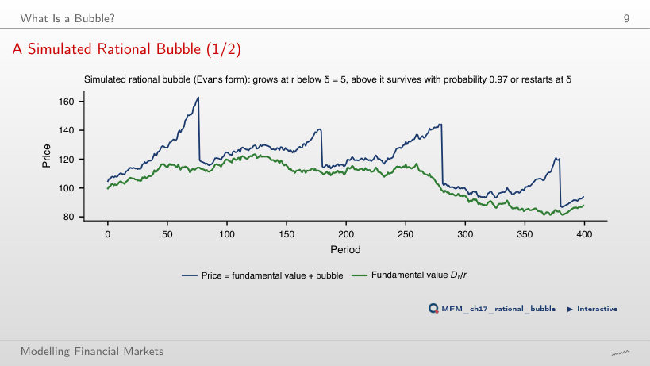
Answer
It falls from about 4.1% to 1.5% per period. For Bₜ > δ, the mean growth rate conditional on survival is (1 + r)/π − 1 − (δ/Bₜ)(1 − π)/π; when Bₜ is much larger than δ, the last term is small. The unconditional mean growth stays at r = 1%; it is not the growth rate conditional on survival. The values 33.3 and 200 periods, 1/(1 − π), are geometric waiting times under a constant collapse risk, not the exact duration of Evans episodes. With π = 0.97, the simulated bubble collapsed visibly 4 times, and at its peak the price was 1.46 times the fundamental value.
Run-Ups and Crashes in the Data
Run-Ups and Crashes Aligned at the Peak
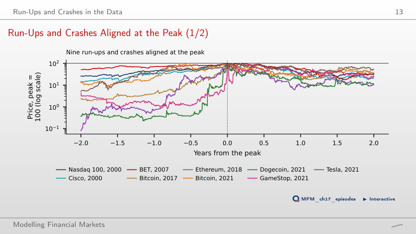
Answer
No. Selecting on the outcome excludes run-ups that did not end in a crash, and removing an extreme episode does not repair this selection. The run-ups over the two years before the peak range from +97% (BET, 2007) to +124,004% (Ethereum, 2018). The chart shows the maximum fall in the first two years after the peak, between −74% (Tesla) and −94% (Ethereum); the lecture table uses four years. For the Nasdaq 100, these are −76% and −83% respectively.
What Do Sharp Run-Ups Predict?
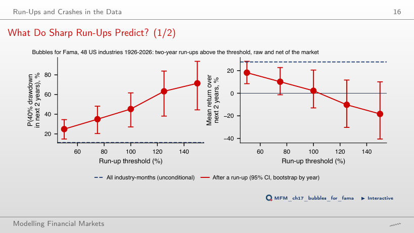
Answer
There is no clear evidence that it is negative. The frequency of a crash and the return at the end of the two years measure different things. The interval contains negative and positive values; it does not establish that the mean is zero. A crash follows in 45% of the cases (53 episodes in 27 industries, 95% CI [27%, 62%]), against 11% for an arbitrary industry-month. Selection requires the two-year return to exceed the threshold both raw and in excess of the market, a raw five-year return of at least 50%, and at least two years between episodes of the same industry.
Testing for Explosive Behaviour
Three Ways to Choose Windows
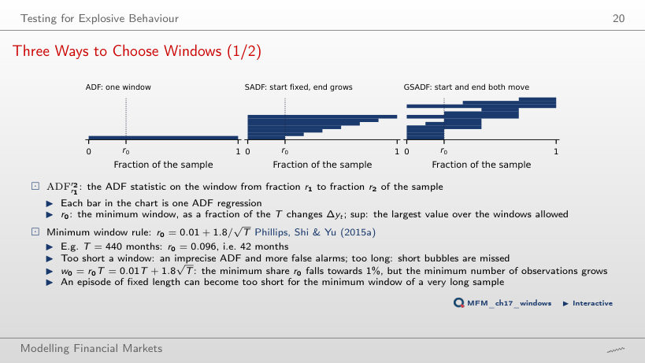
Answer
The rule gives r₀ = 0.01 + 1.8/√440 = 0.096, i.e. w₀ = 42 months. SADF runs 399 windows (one per end point), GSADF 79,800 (all start–end pairs), hence the supremum over about 80,000 windows.
Null Distributions and Critical Values
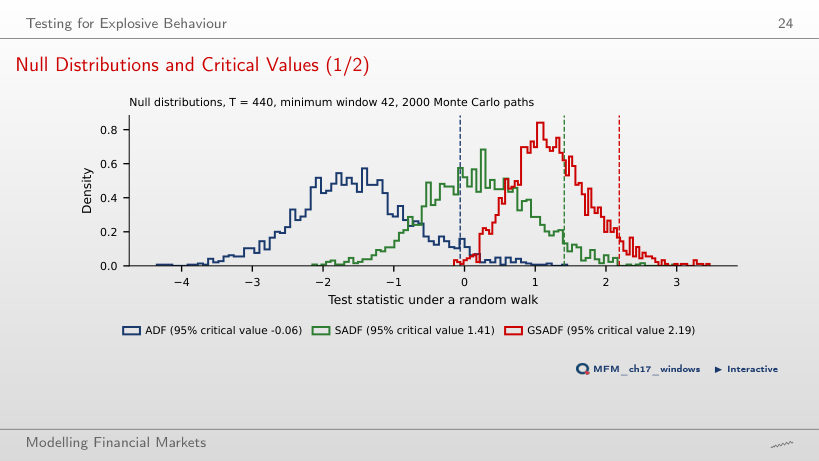
Answer
It falls to 1.65. GSADF is the maximum of about 80,000 ADF statistics on overlapping windows, and under the null the maximum of many statistics typically exceeds each of them. With a longer minimum window there are fewer windows and the critical value falls (1.65 for w₀ = 132); with a shorter one it rises (2.58 for w₀ = 22). The full-sample ADF does not depend on w₀.
S&P Composite (Shiller) Price-Dividend Ratio, 1871–2026
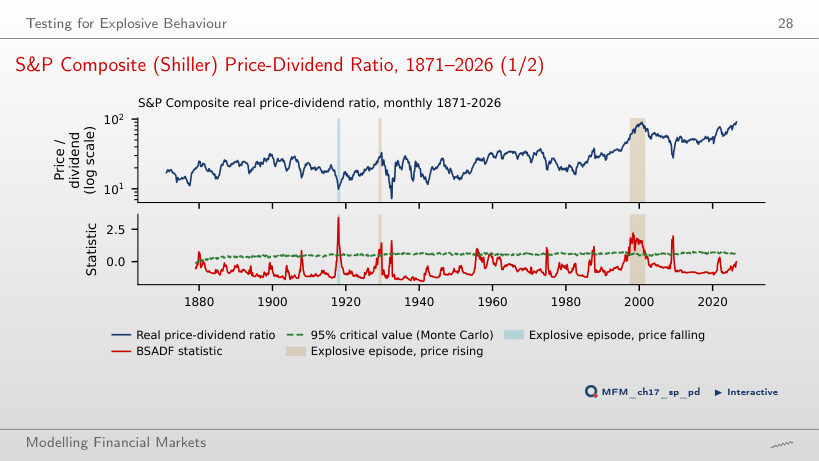
Answer
There is no explosiveness signal at this date under the chosen specification: the test looks for acceleration, not for a high level. In May 2026, BSADF is about 0.00, below the critical value 0.60. With the minimum duration L = 8, three episodes are retained: Aug 1917–Jun 1918 (an accelerating fall of the ratio), Nov 1928–Sep 1929 and May 1997–Aug 2001; another 46 exceedances form shorter runs. Local non-rejection does not establish the absence of a bubble. On the full sample, GSADF = 3.41 exceeds the 95% critical value, 2.39, while the full-sample ADF (−1.11) detects nothing.
Bitcoin: Explosive Episodes
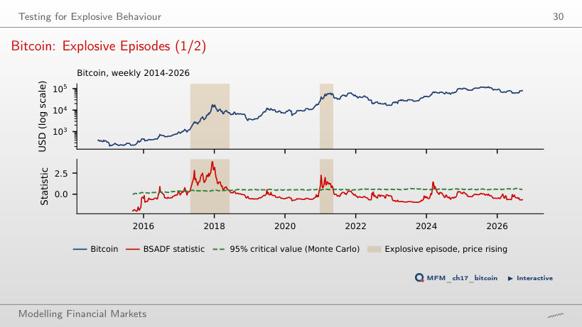
Answer
1–15 March 2024. With the Monte Carlo critical values, BSADF exceeds the threshold on 1–15 March (three consecutive weeks) and on 29 March–5 April (two). Reducing L changes the duration filter, not the statistics or the thresholds: the three-exceedance run becomes an episode, the two-exceedance run stays excluded, and the gap between them prevents their merger. With L = 7, the episodes are Apr 2017–Jun 2018 and Dec 2020–May 2021; with the wild bootstrap, May 2017–Jan 2018 and Dec 2020–Feb 2021. GSADF = 3.85 rejects the null with both critical values (2.27 and 2.82).
Date-Stamping Is a Multiple Test: Bitcoin
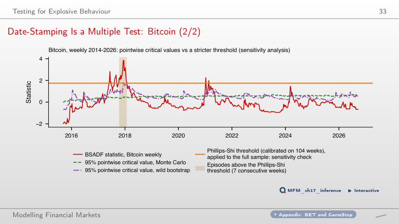
Answer
About 95%: on 2,000 random-walk paths, an exceedance occurs in 95% of them, and an "episode" of at least seven consecutive exceedances in 59%. The 5% option is the nominal level of a single comparison. The 19% option comes from applying the Phillips–Shi threshold, calibrated on 104 weeks, to the whole history: a sensitivity analysis, not family-wise error control. The threshold is 1.75, against pointwise Monte Carlo values of at most 0.71; with it a single episode remains, Oct 2017–Jan 2018.
The Log-Periodic Power Law (LPPLS)
LPPLS on Bitcoin, 2017
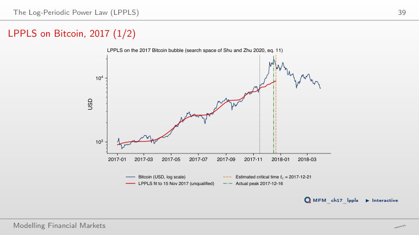
Answer
64.3% = (0.42 − 0.15)/0.42. The difference of 0.27 is 27 percentage points, not a relative reduction of 27%. The value 35.7% = 0.15/0.42 is the part of the initial error that may remain. The fit puts tc on 21 Dec 2017, 5 days after the peak, and m = 0.95, ω = 10.54 and B = −2.62 lie in the required ranges; passing the error filter does not guarantee passing the other conditions. No fit on this grid is qualified.
How Stable Is the Critical Time?
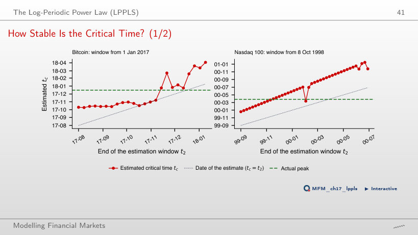
Answer
The share of the fits on this grid that meet the retrospective criterion. The denominator is 20 fits, not 20 independent crashes; the proportion is neither a calibrated crash probability nor the confidence level of an interval. The 20 fits put tc between Oct 2017 and Feb 2018, with a mean absolute error of 48 days; for the Nasdaq 100 the mean error is 71 days. None of these fits is qualified.
Bitcoin: LPPLS Confidence Indicator
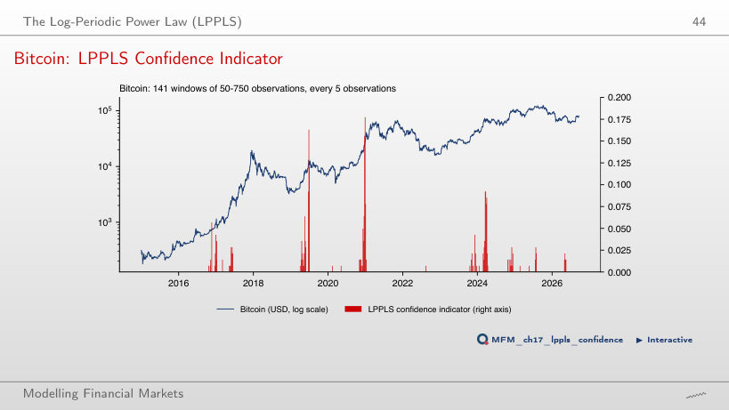
Answer
No. The fall follows 22% of the 82 signals and 37% of the dates without a signal (709 dates evaluated). The difference, −15.5 percentage points, has a block-bootstrap CI of [−30.0, 1.8]: the evidence is weak, and the sign is the opposite of the expected one.
LPPLS: Qualification Filters
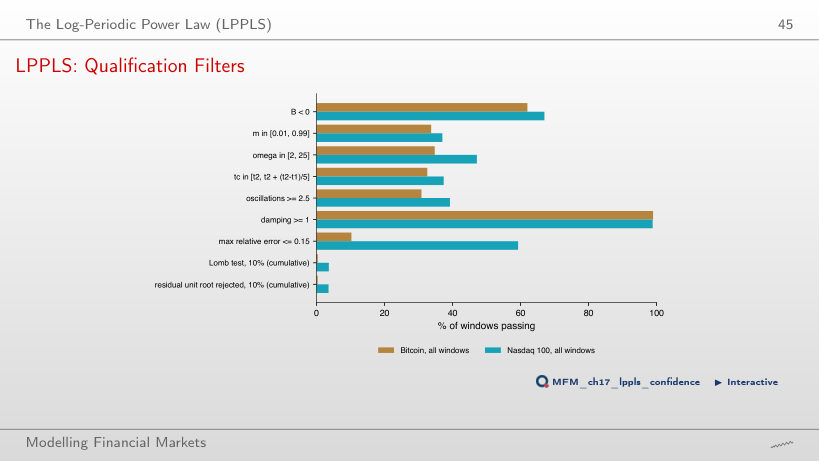
Answer
It cannot be determined from these two shares. 0.4% is the intersection of all the preceding conditions with the Lomb test; its complement, 99.6%, is not the rejection rate of the Lomb test alone. Computing 1 − 0.4/10.2 = 96.1% wrongly attributes to the Lomb test every elimination between the error filter and the cumulative result. Taken separately, a relative error of at most 0.15 is passed by 10% of the windows, against about a third for the conditions on m, ω, tc and the number of oscillations. After all conditions, 0.3% of the Bitcoin windows and 3.5% of the Nasdaq 100 windows remain qualified, hence the small values of the indicator (at most 0.18).
Regime-Switching Models
Nasdaq 100: Two Regimes
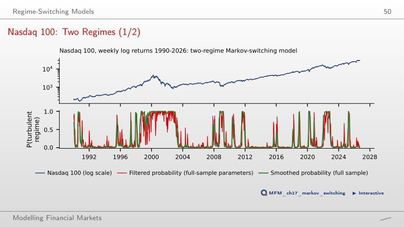
Answer
It rises from about 23.5 to 200 weeks: the duration is 1/(1 − p₂₂), so it grows ever faster as p₂₂ approaches 1 (calm regime: 75.4 weeks). The first value uses the estimated parameter before rounding. The duration is not proportional to p₂₂ and does not depend on the volatility of the regime. The filtered probability of 0.99 on 31 March 2000 indicates the turbulent regime, not the direction of prices: that week the index fell from 4,692 to 4,398. The filter parameters are estimated on the whole sample. By the smoothed probability, the turbulent episode around the peak starts in Jun 1998.
How Many Regimes? A Bootstrap LR Test
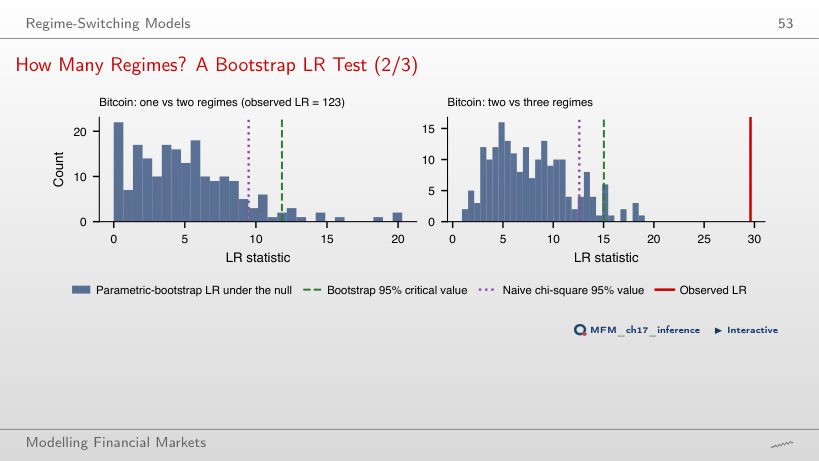
Answer
p = (1 + 0)/(99 + 1) = 0.010. The option 0 ignores the correction; 0.005 is the smallest possible value with 199 replications. Observing no exceedances does not establish that the tail probability is zero. Under H₀ the transition probabilities p₁₁ and p₂₂ are not identified, so LR does not follow a χ² distribution: with 199 replications, the 95% bootstrap critical value is 11.8, against 9.5 from χ²₄.
Crypto and AI Bubbles
Dot-Com vs AI
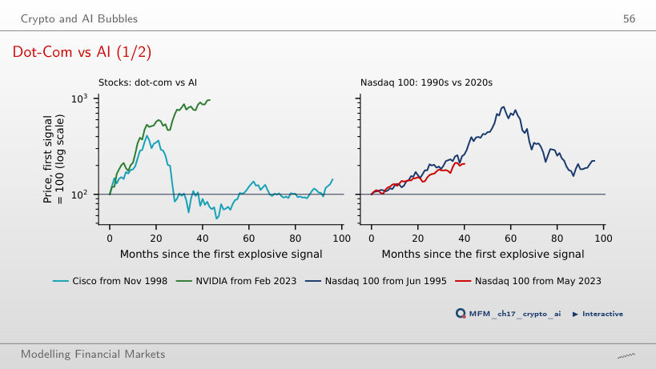
Answer
23.8% = 2.6/2.1 − 1. The difference of 50 percentage points compares the cumulative returns, 160% and 110%; 45.5% = 160/110 − 1 relates the returns to each other, not the levels. The first signal is in Jun 1995 and May 2023 respectively. In the 1990s the peak came after 57 months, at 8.2 times the level at the signal. NVIDIA stands at 9.6 times after 43 months; Cisco peaked after 16 months, at 4.1 times.
Case Studies: Housing Speculators and Predictable Crises
Case Study (3/5): Prices and Volume, 2000–2011
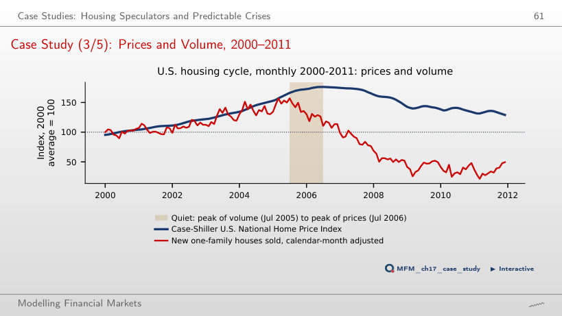
Answer
No. The date of the maximum over the whole interval is identified in retrospect; an alarm must be computable at the decision date and then evaluated out of sample. Seasonal adjustment does not solve this problem. New-home sales, adjusted for the calendar month, peak at 157 in Jul 2005, while prices rise to 176 in Jul 2006, with sales already down to 110. With unadjusted sales the lead is 16 months.
Second Case Study (2/4): Crisis Probability After the R-Zone
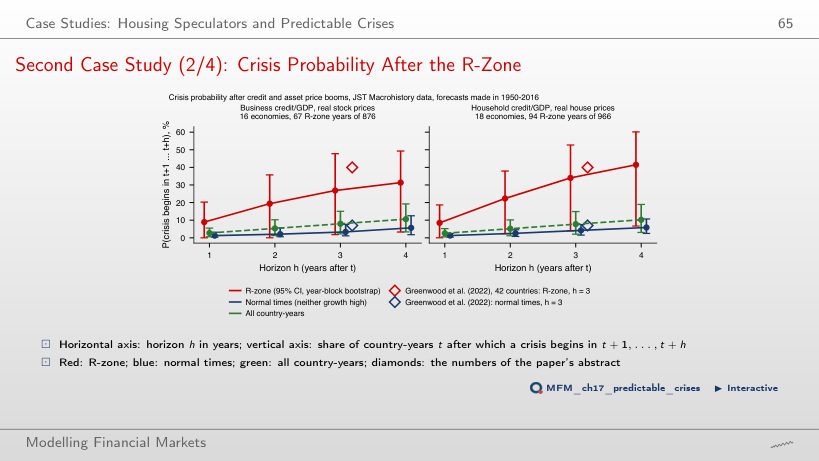
Answer
The crisis frequency after an R-zone rises from 21% (206 country-years) to 50% (30 country-years), while the number of crises preceded by an R-zone falls from 17 to 8 of the 25. The two measures have different denominators. For firms: 17% and 37%, with 16 and 3 of the 24 crises. The comparison describes the two thresholds in this sample; the conditional frequency does not rise at every step of the grid (for firms, from the 50th to the 55th percentile it falls slightly, from 16.9% to 16.6%). A higher threshold means fewer false alarms and more missed crises.
EODHD prices (Nasdaq 100, BET, Cisco, NVIDIA, Tesla, GameStop, Bitcoin, Ethereum, Dogecoin), up to 18 Sep 2026. S&P Composite price-dividend ratio: public data of Robert J. Shiller, Jan 1871–Jun 2026. 48 US industries: Kenneth French Data Library, Jul 1926–Sep 2026. Housing: FRED (CSUSHPINSA, HSN1FNSA). Credit, prices and crises: Jordà–Schularick–Taylor Macrohistory Database (R6), 18 advanced economies, 1950–2020. Critical values, LPPLS fits and Markov-switching models are computed with the chapter's code; the browser only recombines them.